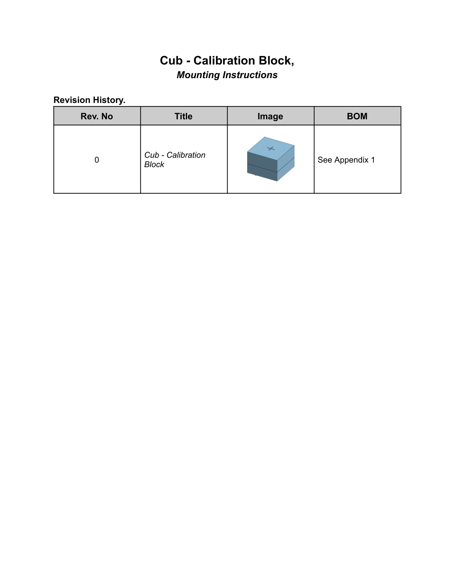
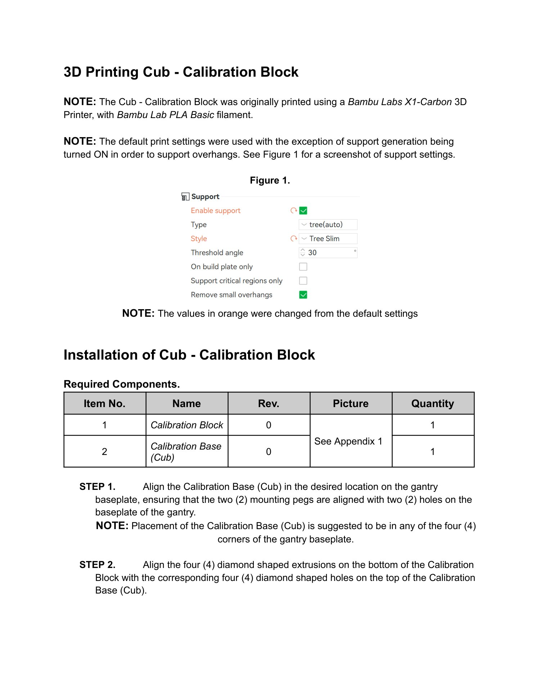
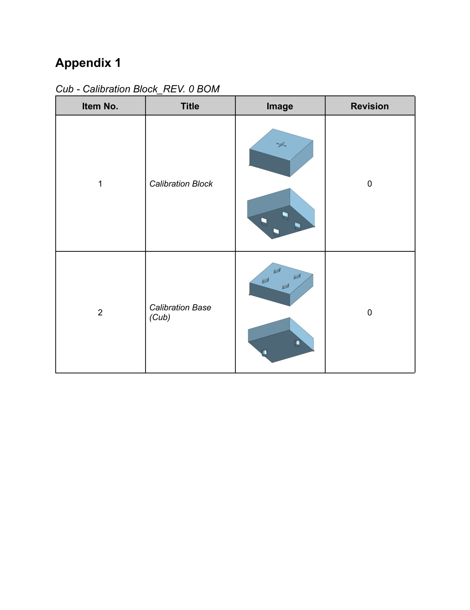

Calibration guide · Cub
Cub Calibration Block
Print a calibration block and its instrument-specific base, then locate the base on a corner of the gantry baseplate. This guide distills the current mounting instructions into a quick, repeatable setup.
Source: Cub - Calibration Block, Mounting Instructions.pdf (Cubware source).
Parts
Use one Calibration Block (rev. 0) and one Calibration Base (Cub) (rev. 0). The source document lists one of each.
Print settings
The reference print used a Bambu Labs X1-Carbon with Bambu Lab PLA Basic filament. Start from the default print settings and turn support generation on for the overhangs; the source figure shows tree (auto) support with Tree Slim selected and a 30° threshold. The orange values in the source figure are the changed settings.
Mount the block
- Place the Cub calibration base in the desired location on the gantry baseplate. Align its two mounting pegs with two holes in the baseplate. Any of the four gantry corners is suggested.
- Align the four diamond-shaped extrusions on the bottom of the calibration block with the four matching diamond-shaped holes on top of the Cub base.
Footprint note
The mounting PDF specifies corner placement and peg / hole alignment, but does not state an overall base dimension or required clearance. Confirm the available corner area against the current CAD before fabrication.
Download the original PDF Choose another guide
Illustrated source manual
Read the original assembly figures and parts tables below. These pages were retrieved from KABLab on September 22, 2026. Open the source Google Doc for later changes.
View all 3 illustrated pages


